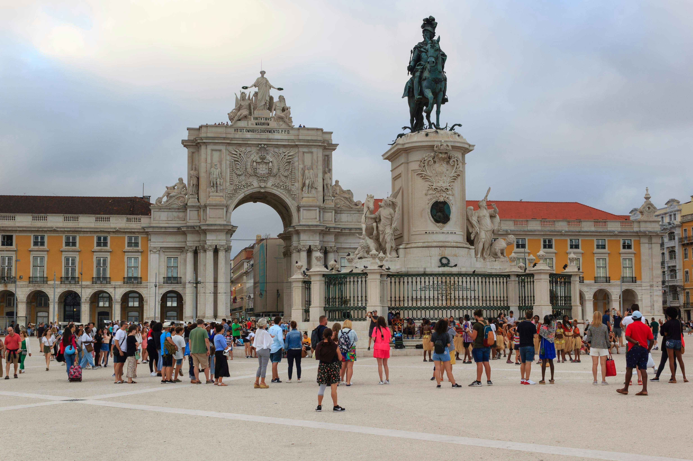

Three thousand years of history, one extraordinary walk. Go at your own pace.
Three thousand years of history, the world's first earthquake-proof city, a river that launched empires, and a literary saint who left behind a trunk of twenty-seven thousand documents. Not bad for an afternoon.
Get all 10 stops with narrated audio and live GPS. A code will be sent to you after purchase to unlock the full tour.
Unlock Full Tour - €4.99